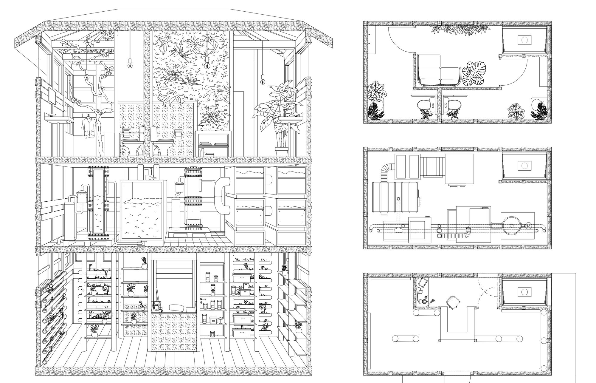

IS THERE TIME TO IMAGINE A TOILET THAT GROWS FLOWERS?
// FLOWER TOILET //
ETH ZÜRICH - STUDIO TOM EMERSON
This project connects the existing public toilet on Bürkliplatz in Zurich to a very self-sustaining flower store,
which retrospectively also enhances the experience of using this toilet.
The two new floors on top of the existing structure are held in the same architectural style as the existing one.
An intricate water system connects Bürkliplatz, toilet and flower store. The first floor between toilet and store is used to separate and clean the water.
This makes it possible, that flowers are grown in the store itself, using hydroponics. The remaining water is given back to Bürkliplatz to close the circle.

